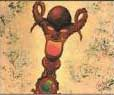

La Bottega delle Arti Magiche è un grande emporio, facente capo direttamente al Circolo dei Summoner, dove sono venduti ed acquistati oggetti magici. Questo emporio, famosissimo in tutta Pergar è utilizzato non solo dagli iscritti al Circolo ma da tutte le classi di cittadini. Gli avventurieri che nelle loro missioni recuperano oggetti magici e desiderano venderli solo soliti recarsi alla Bottega delle Arti Magiche per venderli. Solitamente il Circolo dei Summoner acquista oggetti magici ad un valore non superiore all'80% del loro valore medio di mercato (sempre che si tratti di oggetti che possono essere rivenduti senza particolari problemi, altrimenti l'offerta sarà inferiore). Oggetti particolarmente difficili da rivendere potranno anche non essere acquistati. Il mago che dirige la Bottega delle Arti Magiche può autorizzare acquisti del valore di 20000 karsi, per valori superiori occorrerà l'assenso dei Sublimi Detentori del Grande Potere.

Presso la Bottega delle Arti Magiche sono offerti i seguenti servizi di identificazione magica:
Identificazione di liquidi comuni e di pozioni magiche con metodo non magico
(Alchemy
Sense)
Il costo del servizio
è pari a 30 karsi
(comprensivo della documentazione relativa). Il punteggio base sulla quale deve
essere effettuata la prova è pari a 16, punteggio al quale devono essere
inseriti i modificatori dovuti ai punti esperienza della pozione (-1 per ogni
100 xp di valore o frazione). Il rischio di una non corretta identificazione e
dell'accidentale rottura della pozione è a carico di chi decide di sottoporre la
sua pozione a quest'analisi di laboratorio. Il risultato dell'identificazione
sarà noto dopo
1d4+1 giorni
(+1 giorno per ulteriore
pozione da identificare oltre la prima). In caso di identificazione urgente sarà
dovuta la somma addizionale di
20 karsi
e la stessa sarà effettuata per
il giorno seguente
(fino a 3 pozioni + 1 giorno
da una a tre pozioni ulteriori da identificare oltre le prime tre).
Identificazione di pozioni magiche con metodo magico
(Indaral's Fluid
Identification)
Il costo del servizio
(comprensivo della documentazione relativa) dipende dal livello di lancio della
magia e, quindi, dalla relativa possibilità di successo dell'incantesimo. Il
cliente può decidere a che livello di lancio desidera che la magia sia lanciata
partendo da un livello di lancio minimo pari al 4°:
| 4° livello (40%), costo 72 karsi | 7° livello (70%), costo 112 karsi |
| 5° livello (50%), costo 85 karsi | 8° livello (80%), costo 132 karsi |
| 6° livello (60%), costo 99 karsi | 9° livello (90%), costo 152 karsi |
Comunemente il risultato dell'identificazione sarà noto il giorno successivo a quello di presentazione della pozione. Il rischio di una non corretta identificazione è a carico di chi decide di sottoporre la sua pozione a quest'analisi magica.
Identificazione di oggetti magici
(Identify)
Il costo del servizio
(comprensivo della documentazione relativa) dipende dal livello di lancio della
magia e, quindi, dalla relativa possibilità di successo dell'incantesimo. Il
cliente può decidere a che livello di lancio desidera che la magia sia lanciata
partendo da un livello di lancio minimo pari al 4°:
| 4° livello (40%), costo 198 karsi (90)* | 7° livello (70%), costo 264 karsi (165)* |
| 5° livello (50%), costo 211 karsi (112)* | 8° livello (80%), costo 297 karsi (198)* |
| 6° livello (60%), costo 231 karsi (132)* | 9° livello (90%), costo 356 karsi (257)* |
Il rischio
di una non corretta identificazione è a carico di chi decide di sottoporre
l'oggetto magico a quest'analisi magica. Comunemente il risultato
dell'identificazione sarà noto
1d8+2 giorni
dopo quello di presentazione dell'oggetto magico. In caso di identificazione
urgente sarà dovuta la somma addizionale di
50 karsi (25)*
e la stessa sarà
effettuata per il
giorno seguente (fino
a 2 oggetti magici + 1 giorno da una a due oggetti magici ulteriori da
identificare oltre i primi due).
* Il valore tra
parentesi si riferisce al costo dell'identificazione qualora l'oggetto che si
vuole fare identificare è incantato solo con un
minor enchantment.
Tutte le pozioni vendute dal Circolo dei Summoner hanno una probabilità di riuscita dell' 80%, se si vuole acquistare una pozione la cui efficacia sia stata controllata magicamente e certificata occorre pagare un prezzo supplementare di 100 karsi oltre al costo della singola pozione.
La percentuale mensile di presenza indica la possibilità espressa in valore percentuale di trovare una pozione di quella tipologia già preparate senza dovere attendere il tempo di attesa. Se il tiro riesce il personaggio potrà effettuare un nuovo tiro passando al successivo valore percentuale per determinare la presenza di una seconda pozione e così via. Se, invece, il tiro fallisce le pozioni dovranno essere ordinate e potranno essere ritirate una volta trascorsi 1d20 giorni + 1 giorno ogni 15 xp del valore totale in punti esperienza delle pozioni ordinate (arrotondando per eccesso). Il tiro per la presenza può essere ripetuto solo dopo che siano trascorsi almeno 30 giorni dal tiro precedente.
Le pozioni sono vendute in contenitori standard di rame (tiro salvezza del metallo con penalità di -2), Qualora si desiderano in contenitori differenti occorre pagare il relativo supplemento di prezzo.
| Tipologia di Pozione | Percentuale mensile di presenza | Costo in Karsi | Valore in XP |
| Potion of Gaseous Form | 70% - 50% - 30% | 800 | 175 |
| Potion of Sandskin | 70% - 50% - 30% | 675 | 175 |
| Potion of Summon Hobgoblin | 80% - 60% - 40% | 200 | 50 |
| Potion of Summon Gnoll | 70% - 50% - 30% | 400 | 100 |
| Potion of Summon Bugbear | 60% - 40% - 20% | 700 | 175 |
| Potion of Summon Ogre | 50% - 30% - 10% | 1050 | 275 |
| Potion of Summon Troll | 40% - 20% | 1600 | 400 |
| Potion of Food Creation | 80% - 60% - 40% | 240 | 75 |

Quando sono acquistate le polveri magiche sono contenute in un sacchetti capaci di contenere 1 libbra di polvere (5 dosi). L'acquirente può scegliere il contenitore che desidera dalla seguente lista:
| TIRO 1d20 | TIPOLOGIA | PESO | COSTO | PORTATA | NOTE |
| 1-2 | SACCHETTO DI SETA SILVERIANA [U] | 0,1 LIBBRA | 3 KARSI | 1 LIBBRA (5 dosi) |
50% infiltrazioni, tiro salvezza stoffa |
| 3-10 | SACCHETTO DI CUOIO [C] | 0,25 LIBBRE | 0,5 KARSI | 1 LIBBRA (5 dosi) |
33% infiltrazioni, tiro salvezza cuoio |
| 11-16 | BARATTOLO DI LEGNO CON TAPPO A VITE [U] | 0,5 LIBBRE | 3,5 KARSI | 1 LIBBRA (5 dosi) |
10% infiltrazioni, tiro salvezza legno |
| 17-20 | BARATTOLO DI METALLO CON TAPPO A VITE [U] | 1 LIBBRA | 7 KARSI | 1 LIBBRA (5 dosi) |
10% infiltrazioni, tiro salvezza metalli dolci |
La percentuale mensile di presenza indica la possibilità espressa in valore percentuale di trovare una dose di polvere di quella tipologia già preparata senza dovere attendere il tempo di attesa. Se il tiro riesce il personaggio potrà effettuare un nuovo tiro passando al successivo valore percentuale per determinare la presenza di una seconda dose della medesima polvere e così via. Se, invece, il tiro fallisce la polvere dovrà essere ordinata seguendo le normali regole previste per i Minor Enchantment.
| Tipologia di Polvere | Percentuale mensile di presenza | Costo in Karsi | Valore in XP |
| Dust of Appearance | 50% - 45% - 40% - 35% - 30% | 200 | 75 |
| Dust of Sand Soldier | 40% - 35% - 30% - 25% - 20% | 530 | 75 |

Il Circolo dei Summoner produce su richiesta i più comuni incantamenti minori dei maghi. In primo luogo, l'Accademia incanta, su richiesta, oggetti portati dai clienti. Il cliente dovrà procurarsi un oggetto e consegnarlo all'Accademia e pagare, tutto anticipatamente, un contributo di 10 karsi + il valore dell'incantamento prescelto. Il Circolo garantisce la consegna dell'oggetto perfettamente incantato in un tempo pari al 300% del tempo minimo normalmente richiesto per la produzione dell'incantamento. Per gli incantamenti di scuola di magia diversa dalla conjuration/summoning si richiede però un prezzo supplementare del 5% sul valore dell'incantamento e la consegna avverrà in un tempo pari al 400% del tempo minimo normalmente richiesto per la produzione dell'incantamento.
Il Circolo però richiede che sia consegnata per le armi, quantomeno un'arma di qualità superba, per le corazze una corazza di fattura eccellente, per le gemme una gemma di qualità buona e 6 carati. Il Circolo per propria politica non incanterà, infatti, oggetti di qualità inferiore a quella su specificata. Ciò non toglie, però, che il cliente possa, assumendosi normalmente il rischio di fallimento, organizzarsi con un singolo mago del Circolo per l'incantamento del proprio oggetto.

Il Circolo dei Summoner ha una sua produzione di bacchette magiche della scuola conjuration, tutte le bacchette magiche sono prodotte su ordinazione con pagamento anticipato. Tutte le bacchette magiche appena create posseggono 1d20+80 cariche. Per verificare il funzionamento delle bacchette magiche consultare il relativo regolamento (LINK).
BACCHETTE CON SINGOLI INCANTESIMI
Il tempo di attesa è stato calcolato considerando 10 giorni per ogni punto di aurea magica necessario per infondere energia magica nella bacchetta + l'ammontare del tempo di incantamento aumentato dei 3/5 e successivamente del 50% (ad esempio la Wand of Grease richede 30 giorni per l'aura magica + ((15 giorni + 9 giorni, ossia i 3/5 di 15)* 1,5 ossia 24 + 12) = 36 giorni per un totale di 66 giorni. Ovviamente qualora un mago porti una bacchetta magica già carica dell'aura magica richiesta potrà ridurre dal tempo di produzione l'ammontare di giorni addizionati per l'aura magica (indicati tra parentesi nella tabella) e dal costo finale della bacchetta la somma di 200 karsi per scontare il valore della bacchetta magica vuota necessaria all'incantamento.
Il costo di acquisto in karsi, invece, è stato calcolato aumentando il valore finale della bacchetta del 10% (del 6% per la propensione media del Circolo alla produzione dell'oggetto e del 4% per la previsione di 2 errori comuni nella produzione).
| Tipo di Bacchetta Magica | Tempo di Attesa | Costo in Karsi / Valore in XP |
| Wand of Grease (Conjuration, 1° Livello di Potere, II Grado) | 66 giorni (30 giorni) | 5000 / 400 |
| Wand of Alpha's Acid Stream (Conjuration, 1° Livello di Potere, III Grado) | 132 giorni (60 giorni) | 8850 / 650 |
| Wand of Ice Shards (Conjuration, 1° Livello di Potere, III Grado) | 132 giorni (60 giorni) | 8150 / 650 |
| Wand of Sara's Searing Skin (Conjuration, 1° Livello di Potere, III Grado) | 132 giorni (60 giorni) | 8850 / 650 |
| Wand of Wimbly's Wonderful Web (Conjuration, 1° Livello di Potere, IV Grado) | 176 giorni (80 giorni) | 9750 / 800 |
| Wand of Heavy Javelin Throwing (Conjuration, 2° Livello di Potere, III Grado) | 220 giorni (100 giorni) | 15250 (16250 con componente materiale) / 1300 |
| Wand of Melf's Acid Arrow (Conjuration, 2° Livello di Potere, III Grado) | 220 giorni (100 giorni) | 15700 / 1300 |
| Wand of Rain of Thorns (Conjuration, 2° Livello di Potere, IV Grado) | 254 giorni (120 giorni) | 18150 / 1500 |
| Wand of Venom (Conjuration, 2° Livello di Potere, IV Grado) | 254 giorni (120 giorni) | 17450 / 2000 |
| Wand of Web (Conjuration, 2° Livello di Potere, IV Grado) | 254 giorni (120 giorni) | 18150 / 2000 |
| Wand of Karsar Acidball (Conjuration, 3° Livello di Potere, II Grado) | 154 giorni (70 giorni) | 15250 / 1250 |
| Wand of Pergarian Catapult Bolt (Conjuration, 3° Livello di Potere, II Grado) | 154 giorni (70 giorni) | 14700 / 1250 |
| Wand of Vulcanic Lava Bolt (Conjuration, 3° Livello di Potere, II Grado) | 154 giorni (70 giorni) | 15000 / 1250 |
| Wand of Alpha's Ice Fall (Conjuration, 3° Livello di Potere, III Grado) | 242 giorni (110 giorni) | 27600 / 1750 |
| Wand of Flame Arrow (Conjuration, 3° Livello di Potere, III Grado) | 242 giorni (110 giorni) | 21050 / 1750 |
| Wand of Conjure Poisonous Cloud (Conjuration, 3° Livello di Potere, IV Grado) | 330 giorni (150 giorni) | 24250 / 2000 |
BACCHETTE CON EFFETTI MAGICI PLURIMI
Wand of Acid Supremacy
(Costo: 14750 karsi, Valore in XP: 1187, Tempo di attesa 220 giorni)
1 carica) Alpha's Acid Stream (1°
lvl, 3° grado, Conjuration)
3 cariche) Karsar Acidball (3° lvl, 2° grado, Conjuration)
VENDITA DI BACCHETTE USATE
Esiste anche un mercato di bacchette magiche usate. Ogni mese vi è il 25% che una di tali bacchette sia in vendita presso Il Circolo dei Summoner. Nella quasi totalità dei casi si tratta di bacchette magiche contenenti un singolo effetto magico. Per determinare l'effetto magico caricato sulla bacchetta tirare 1d12: 1-5 primo livello di potere 6-9 secondo livello di potere 10-12 terzo livello di potere. Una volta determinato il livello di potere determinare la scuola di magia tirando 1d20: 1 Abjuration (+20%) 2-5 Alteration (+5%) 6 Charm (+20%) 7-11 Conjuration 12 Divination (+5%) 13 Enchantment (+20%) 14-16 Evocation (+15%) 17 Illusion (+20%) 18-20 Necromancy (+10%). Una volta determinata la scuola, se si tratta di Conjuration tirare a sorte tra gli incantesimi utilizzati per la creazione di bacchette magiche dal Circolo (vedi la tabella sopra) di quel livello di potere, altrimenti dalla lista delle magie della scuola di riferimento fino a che non sia selezionata una magia valida. Determinare quindi il numero di cariche massime (1d20+80) e di cariche ancora presenti effettuando un tiro percentuale. Il risultato del tiro percentuale corrisponderà alla percentuale di cariche residue sull'ammontare massimo arrotondate per eccesso. Quindi si tiri un 1d12 per verificare se e quante volte la bacchetta è stata ricaricata: 1-6 la bacchetta non è mai stata ricaricata; per ogni risultato superiore al 6 la bacchetta è già stata ricaricata una volta; 12 si tiri ulteriormente 1d6: 1-3 la bacchetta sarà stata ricaricata 6 volte, 4-6 la bacchetta non può essere più ricaricata. Il Circolo venderà la bacchetta ad una percentuale del suo valore di mercato determinata tirando 1d6: 1 La bacchetta è venduta al 90% del suo valore di mercato; 2 La bacchetta è venduta al 95% del suo valore di mercato; 3 La bacchetta è venduta al 100% del suo valore di mercato; 4 La bacchetta è venduta al 105% del suo valore di mercato; 5 La bacchetta è venduta al 110% del suo valore di mercato; 6 La bacchetta è venduta al 115% del suo valore di mercato. Per bacchette di scuola diversa dalla Conjuration applicare una percentuale addizionale come indicata tra parentesi accanto al nome della scuola di magia.

Il Circolo
dei Summoner produce
verghe della stregoneria utilizzate dai suoi membri. Le verghe della stregoneria
prodotte dalla scuola sono create unicamente infondendo loro energia magica
della scuola
Conjuration/Summoning.
L'accademia produce verghe della stregoneria inserendo incantamenti scelti
dall'acquirente. Il costo della verga deve essere anticipato interamente
all'Accademia. Tutte le verghe appena create posseggono
1d8+39 cariche
se si tratta di una
verga corta (massimo
47 cariche) ed
1d10+40 cariche
se si tratta di una
verga lunga (massimo
50 cariche). Per
verificare il funzionamento delle verghe della stregoneria consultare il
relativo regolamento (LINK).
Per ordinare una verga della stregoneria e calcolarne il costo nonché il
relativo tempo di attesa si seguano i seguenti passi:
1)
Selezionare la forma, il materiale ed il relativo costo della verga (link)
decidendo principalmente tra:
a)
Verga corta
b)
Verga lunga
Si tenga presente che, in
ogni caso, il Circolo
non accetterà di lavorare
su verghe aventi valore negativo di possibilità di incantamento.
2)
Selezionare la scuola di magia base della verga tra:
a)
Conjuration/Summoning
3)
Aggiungere il costo dell'incantamento
magico minore obbligatorio (link):
*
Verga della Stregoneria
[Minor Enchantment (150 xp, 1000 gp)]
4)
Selezionare
l'eventuale
incantamento magico minore
concernente il risparmio di
energia magica (link):
*
Mantenimento Minore delle Cariche Magiche
[Lesser Minor Enchantment (100 xp, 500 gp)]
*
Mantenimento Maggiore delle Cariche Magiche
[Minor Enchantment (150 xp, 1000 gp)]
*
Verga del Risparmio di Energia Magica Minore
[Superior
Minor Enchantment (250 xp, 1500 gp)]
*
Verga del Risparmio di Energia Magica
[Greater
Minor Enchantment (375 xp, 3000 gp)]
*
Rod of Walking [Greater
Minor Enchantment (375 xp, 3000 gp)]
5) Selezionare gli
eventuali
poteri di incanalamento di
energia magica
da inserire nella verga della
stregoneria. Può essere selezionato un qualsiasi numero di poteri, aggiungere
interamente il valore in corone ed in xp del potere più costoso ed il 50% del
valore degli ulteriori poteri prescelti. I poteri di incanalamento di energia
magica sono i seguenti:
*
SOSTITUZIONE DI ENERGIA MAGICA
(+2.500 g.p., +300 xp)
*
ELEVAMENTO DEL LIVELLO DI
LANCIO (+2.500
g.p., +300 xp)
*
INCREMENTO DEL RAGGIO DI
AZIONE (+2.000
g.p., +250 xp)
*
INCREMENTO DELLA DURATA (+2.500
g.p., +300 xp)
*
POTENZIAMENTO DI ENERGIA MAGICA
(+2.000 g.p., +250 xp)
*
ABBASSAMENTO DELLE DIFESE
MAGICHE
(+2.000 g.p., +250 xp)
*
RIDUZIONE DELLA RESISTENZA
MAGICA (+1.500
g.p., +200 xp)
6)
Aggiungere eventualmente
un incantamento proprio della verga della stregoneria. Può essere seleziona
un unico potere magico proprio della verga tra quelli presenti nella
seguente lista. Il costo in corone ed il valore in punti esperienza del potere
deve aggiungersi interamente per determinare il valore finale dell'oggetto
magico.
Verga del Controllo Spazio/Temporale
(+5.000 g.p., +500 xp)
|
 |
Si noti che con questo potere magico unico possono essere incantate solo le verghe della stregoneria che abbiamo come scuola di magia base Summoning. Questo potere magico proprio consente al mago di controllare meglio le magie della scuola Summoning che effettuino richiamo spazio/temporali. Questo potere, infatti, non aiuta in nessun modo il mago nelle magie di richiamo reale. In particolare, quando il mago lancia una qualsiasi magia di summonazione spazio/temporale costui potrà decidere di lanciarla attraverso la verga per farla controllare dal potere magico. Quando effettua tale scelta la magia non conterà ai fini di determinare la capacità di controllo delle creature richiamate magicamente fino a che il mago impugna la verga della stregoneria. Qualora, per qualsiasi motivo, il mago smetta di impugnare la verga questo beneficio verrà meno immediatamente ed il mago, se del caso, dovrà effettuare le prove di controllo come se avesse lanciato la magia di summonazione della quale la verga manteneva il controllo nel momento in cui smette di impugnarla. Il beneficio del potere della verga può essere applicato ad una sola magia di summonazione spazio/temporale alla volta per cui il mago dovrà attendere la fine della magia che ha posto sotto il controllo della verga (o farla terminare anticipatamente) per metterne un'altra sotto il controllo della verga. |
Verga del Mantenimento Spazio/Temporale (+5.000 g.p., +500 xp)
|
Si noti che con questo potere magico unico possono essere incantate solo le verghe della stregoneria che abbiamo come scuola di magia base Summoning. Questo potere magico proprio consente al mago di sostituire il potere magico della verga al proprio nel mantenimento della durata delle magie della scuola Summoning che effettuino richiamo spazio/temporali dei primi quattro livelli di potere e che abbiano una durata calcolata in round. Questo potere, infatti, non aiuta in nessun modo il mago nelle magie di richiamo reale. In particolare, quando il mago lancia una qualsiasi magia di summonazione spazio/temporale costui potrà decidere di lanciarla attraverso la verga per farla mantenere dal potere magico. Il mago dovrà, quindi, utilizzare 1 carica della verga per ogni livello di potere dell'incantesimo lanciato. Quando effettua tale scelta la magia durerà fino a che il mago impugna la verga della stregoneria. Qualora, per qualsiasi motivo, il mago smetta di impugnare la verga la magia terminerà immediatamente (anche prima di quello che sarebbe stato il termine della sua durata qualora fosse stata lanciata senza utilizzare il potere della verga). In ogni caso, la magia terminerà una volta trascorse 3 ore dal momento del lancio della stessa. Ovviamente il mago può far terminare in ogni momento la durata dell'incantesimo che ha lanciato tramite la verga. Il beneficio del potere della verga può essere applicato ad una sola magia di summonazione spazio/temporale alla volta per cui il mago dovrà attendere la fine della magia che ha posto sotto il controllo della verga (o farla terminare anticipatamente) per lanciarne un'altra utilizzando questo medesimo potere. |
7) Calcolare il valore finale della verga in monete d'oro e punti esperienza sommando tutti i relativi addenti. Per calcolare il tempo di consegna (espresso in numero di giorni) della verga si utilizzi la seguente formula: [(1d10 *10 giorni)+(1 giorno ogni 50 monete d'oro di valore della verga)]. Si noti che l'intero prezzo della verga deve essere pagato al momento dell'ordinazione.

Presso il Circolo dei Summoner è possibile acquistare alcuni degli oggetti magici che gli avventurieri e gli altri avventori vendono presso la Bottega delle Arti Magiche (ossia gli oggetti dei quali il Circolo non è interessato a mantenere il possesso). Ovviamente si tratta di oggetti ulteriori rispetto a quelli di produzione del Circolo stesso. Per simulare l'offerta di questi oggetti magici disponibile per i personaggi si consideri che ogni anno solare potranno essere rinvenuti presso il Mercato del Magico del Circolo dei Summoner 2d6 oggetti magici di vario tipo che saranno selezionati casualmente. I giocatori potranno acquistare tali oggetti fino alla fine dell'anno in corso al termine del quale gli oggetti si considereranno non più in vendita e saranno sostituiti dagli oggetti dell'anno successivo.
Per determinare la potenza dell'incantamento si tiri 1d10: 1 - 7 COMMON ENCHANTMENT, 8 - 10 RARE ENCHANTMENT
OGGETTI DISPONIBILI NEL CORSO DELL'ANNO 201 P.N.
ARMA MAGICA - FLANGE MACE Suberba +1 of Least Infernal (Azatar) 9100 karsi 750 xp
ANELLO INCANTATO - RING OF ENERGY PRISM 20/20 cariche 16500 karsi 1250 xp (link)
GUANTI - GAUNTLET OF STRENGHT Metallo 7000 karsi 500 xp
ARMA MAGICA - HORSEMAN'S PICK Suberba in Mithril of Lesser Undead Vulnerability 2550 karsi 250 xp